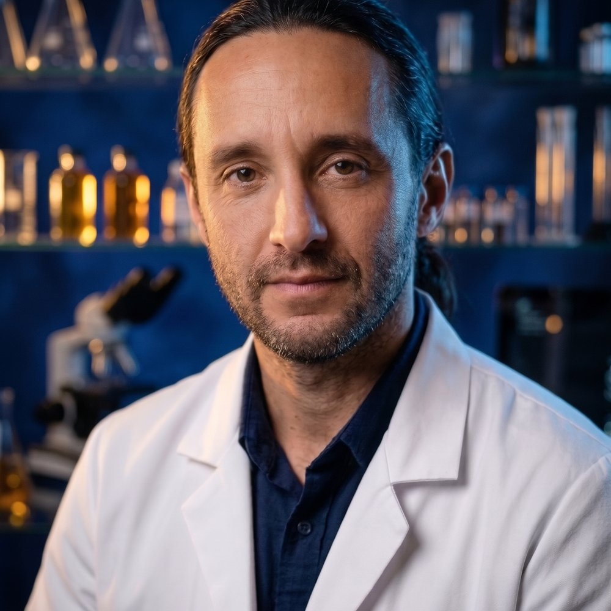

Doctor Bombushkar
Лікар, фітотерапевт, хранитель рецептури ATINE
Автор формули з 26 коренів, 33 роки клінічної практики
«Онкологічний пацієнт заслуговує не на чергову обіцянку, а на максимально чесну відповідь: що ми вже знаємо і чого ще не знаємо.»
Лікарі й науковці, які працюють над формулою, її перевіркою та науковою систематизацією. [Фото та повні регалії — за погодженням з експертами.]

Лікар, фітотерапевт, хранитель рецептури ATINE
Автор формули з 26 коренів, 33 роки клінічної практики
«Онкологічний пацієнт заслуговує не на чергову обіцянку, а на максимально чесну відповідь: що ми вже знаємо і чого ще не знаємо.»
Доктор медичних наук, професор
Патологічна фізіологія; співавтор монографії ATINE®
«Спочатку я був скептиком. Але результати досліджень in vitro та in vivo змінили мою думку.»
Доктор медичних наук, професор, заслужений діяч науки і техніки України
Рецензент монографії ATINE®
«Монографія поєднує традиційну фітотерапію зі суворими стандартами молекулярної біології та патологічної фізіології.»
Доктор медичних наук, професор
Рецензент монографії ATINE®
«Двотомна монографія заповнює важливу нішу в літературі з інтегративної онкології та медичної реабілітації.»
[регалії — уточнити]
Співавтор монографії ATINE®
[регалії — уточнити] · Українська військово-медична академія
Співавтор монографії ATINE®
[регалії — уточнити] · Університет Казімежа Великого, Бидгощ
Співавтор монографії ATINE®
Установи, де проводилися дослідження, і фармацевтичний завод, на якому виготовляють ATINE®.
Експериментальна серія: клітинні лінії
Експериментальна серія: Allium cepa, Drosophila
Наукова база монографії
Міжнародна співпраця
GMP-виробництво, Харків